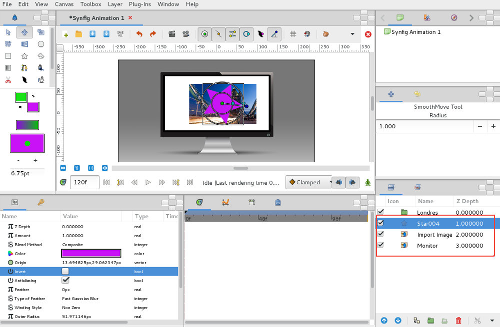
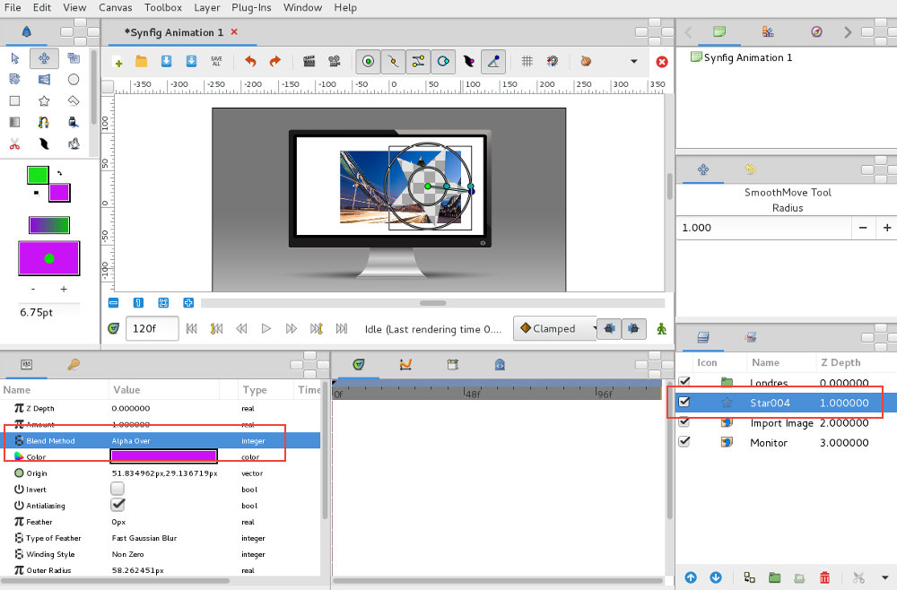
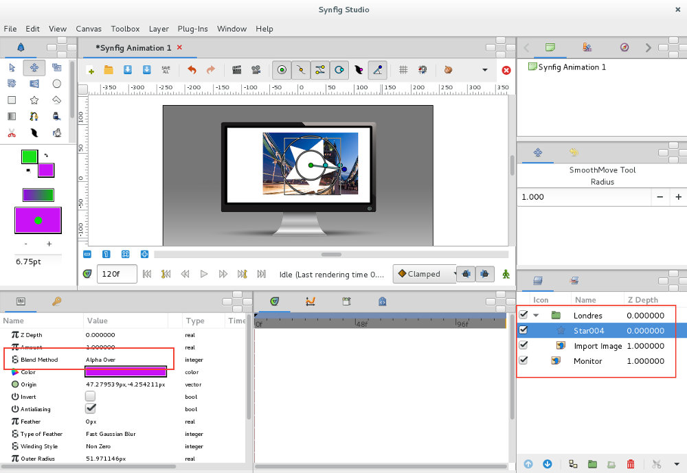
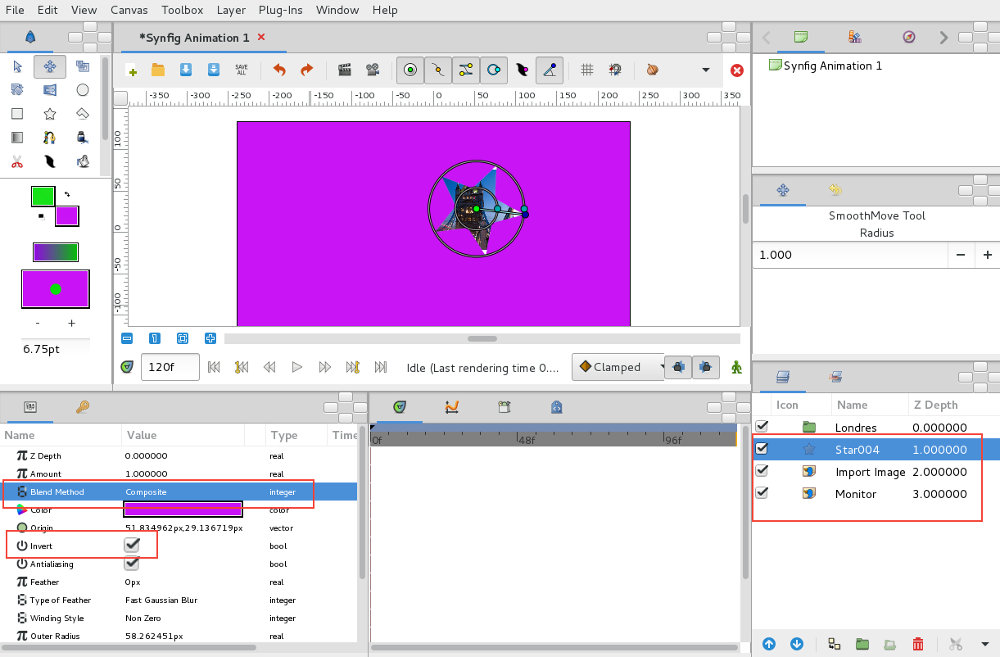
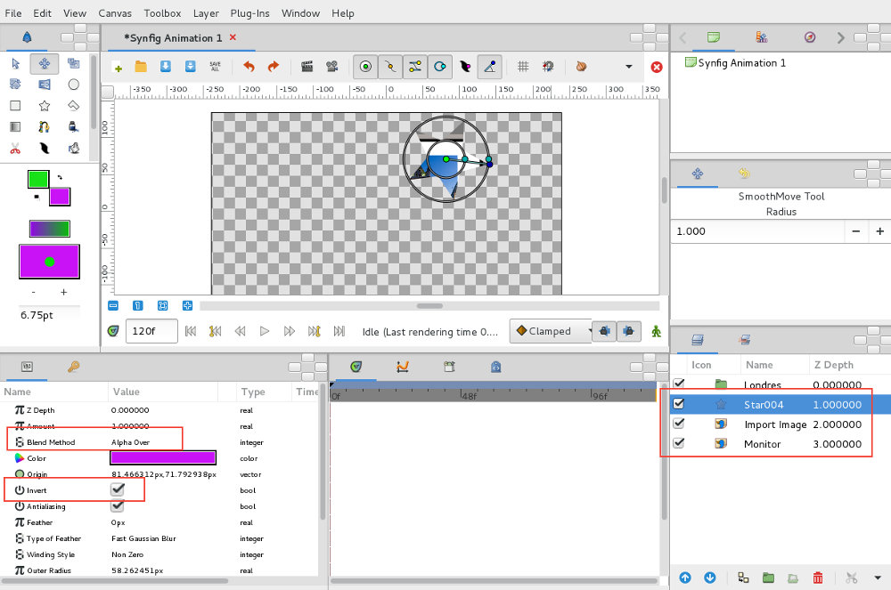
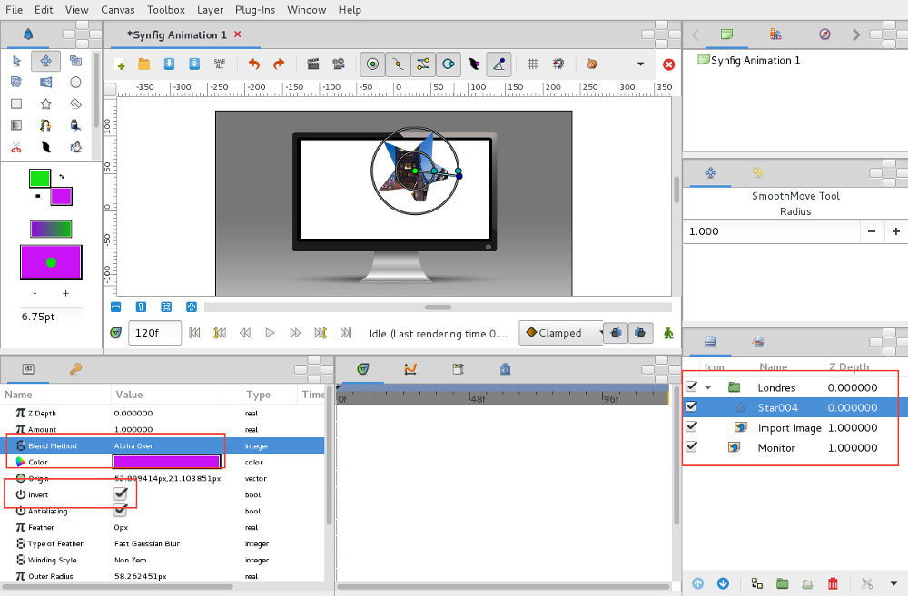

É comum surgir a necessidade de esconder/mostrar objetos parcialmente. Imagine personagens que ficam tapadas pelo prédio mas visíveis na janela, por exemplo. As máscaras são extremamente úteis nestas tarefas. No Synfig, as máscaras são utilizada para esconder ou mostrar...
Nos exemplos abaixo, o que ficar coberto pela máscara vai ficar escondido.
1. Foram importadas duas imagens e foi criada uma forma do tipo Star. Esta última irá servir de máscara.
Imagens utilizadas: Monitor e Londres.
Atente na janela de layers para perceber a ordem e repare que a Group Layer com nome Londres ainda não está a ser utilizada.
2. Selecione a Star e defina o Blend Mode (janela de parâmetros) para Alpha Over. A máscara vai servir para "abrir um buraco", removendo tudo o que estiver em baixo.
3. Com a utilização das Group Layers podemos organizar melhor o efeito do Alpha Over. No exemplo abaixo, a diferença é que a máscara e a imagem de Londres estão no mesmo Group Layer (Londres). Ou seja, o efeito da máscara só vai ser aplicado às imagens que estiverem dentro do mesmo grupo.
Nos exemplos abaixo, o que ficar coberto pela máscara é o que vai ser mostrado.
A diferença para os exemplos acima é a utilização da opção Invert.
1. A Star está acima das restantes layers. Ao ativar o parâmetro Invert, as layers abaixo da Star são escondidas/tapadas com a cor da Star e o interior da Star funciona como uma abertura recortada.
2. O Blend Mode da Star foi alterado para Alpha Over. Ou seja, as layers abaixo da Star ficam transparentes e o interior da Star funciona como uma abertura recortada.
3. Com a utilização das Group Layers podemos organizar melhor o efeito do Alpha Over. O efeito da máscara só vai ser aplicado às imagens qye estiverem dentro do mesmo grupo.
